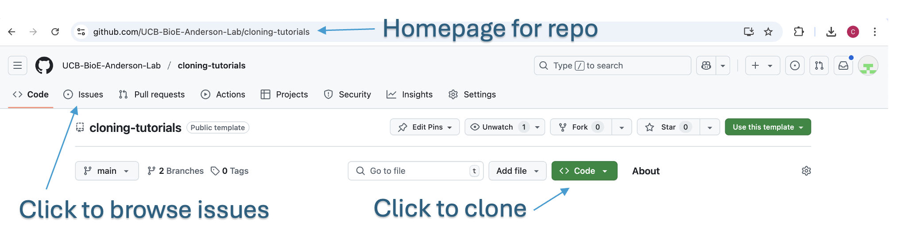

Project Setup and Nomenclature¶
This guide outlines conventions for setting up and organizing a synthetic biology project. These conventions are intended to support clarity, reproducibility, and collaboration. The approach described here emphasizes a consistent, pre-planned structure for working with DNA and experiment metadata. While documentation systems vary across labs, any good system should have a clear scope, support structured naming, and promote project-wide consistency over time.
Defining a Project¶
A project is an independent thread of research with a clear goal. Each project must have a unique, single-token name (e.g., lycopene). Avoid informal names or nicknames in documentation to maintain searchable and traceable records.
When starting out, a project might begin with a narrow goal, but it will likely grow in complexity. Naming it consistently from the start ensures future experiments, constructs, and documentation stay aligned and searchable.
Example:
- Project name: lycopene
- Goal: Maximize lycopene production in E. coli.
Defining an Experiment¶
An experiment is a bundled set of procedures (e.g., cloning, assays) conducted under a specific goal within a project. Experiments are named sequentially and prefixed by the project name (e.g., lycopene33 is the 33rd experiment in the lycopene project).
This deterministic naming also aids automation, indexing, and archiving of experiments. If experiment names are consistent, you can sort and filter results by project or experiment ID with confidence.
Plasmid Naming¶
Plasmids are named using a lowercase “p” and a project-specific prefix. Use sequential numbers:
-
Format:
pLYC1,pLYC2, ... -
Do not use descriptive names like
StrongPromoterGGPPS-pLYC22.
Descriptive names, while initially helpful, tend to grow unwieldy and ambiguous. For example, what begins as 'StrongPromoterGGPPS-pLYC22' may later include more variables, making names long and inconsistent. Short names like pLYC22 can be reliably printed on tubes and cross-referenced with detailed annotations in maps and documentation.
Naming Synthetic DNAs¶
Synthetic DNAs include oligos, gBlocks, and synthesized plasmids. Like plasmids, naming consistency here is vital. Prefixes help clarify type and origin at a glance, which is especially useful when scanning inventory files or browsing digital folders.
- Oligos: Use
o<PROJECT>prefix, e.g.,oLYC1,oLYC2 - GBlocks: Use
g<PROJECT>prefix, e.g.,gLYC1 - Clonal Plasmids from synthesis: Follow plasmid naming conventions
- Oligo Pools: Optional
l<PROJECT>prefix, e.g.,lLYC1
Folder Structure¶
On your computer, organize files by project and subfolders:
To see a concrete example of this structure in practice, visit the example project directory in the course GitHub repository:
cloning-tutorials/examples/lycopene
All data should reside in a structured directory named exactly after the project. This top-level folder will house all planning documents, experimental results, and inventories.
lycopene/
├── Docs/
├── Experiments/
└── Inventory/
- Docs: Emails, publication notes, project overview
- Experiments: Each experiment has its own folder (
lycopene1,lycopene2, ...) - Inventory: Track all physical materials, organized by freezer (Minus20, Minus80, Fridge)
In the lycopene example:
-
Docs/README.mdcould contain a summary of the project goal or a link to relevant papers. -
Experiments/lycopene33/holds folders likeConstructionandMapswhere you'll see placeholders for your design and genbank files. -
Inventory/Minus20/README.mdcan describe what box formats are used and which materials will be stored there.
Example Experiment folder structure:
lycopene33/
├── Construction/
├── Maps/
├── Sequencing/
├── Assays/
└── LabSheets/
This layout mirrors the workflow of a synthetic biology experiment—from planning (Construction), to execution (Maps, Sequencing), to analysis (Assays), and finally lab-specific logistics (LabSheets).
File Types and Conventions¶
-
Construction files:
.txt -
DNA sequences: TSV format (IDT-style) or annotated Genbank files (
.seq,.gb,.ape) -
Oligos under 60bp: 25nm scale; 60+bp: 100nm
-
All naming and file conventions should match what is physically labeled in the lab.
Proper formats reduce ordering errors, improve readability, and allow automated tools to validate or simulate designs. Genbank files should include full annotations for every promoter, CDS, terminator, origin, and sequencing primer site. TSV files should use standard fields as required by synthesis companies (e.g., IDT).
Each sequence should only exist once in the repository. Avoid duplicating the same DNA sequence across multiple files or folders. Duplicates can easily drift apart — differing in name, annotation, or actual sequence — which leads to confusion and possible experimental error. Instead, reference the original file consistently throughout Construction Files and documentation.
Following this structure allows for efficient collaboration, easier debugging, and better long-term data management.
Optional: GitHub Integration¶
Getting Started with GitHub¶
If you are a BioE 140L student, you can ignore this entire GitHub section — it’s optional for your course. You will work locally on your computer and submit a zipped version of your project folder at the end of the term.
For all other users (iGEM project leads, master's students, PhD students, or postdocs), you are expected to use GitHub to manage your project. You do not need to create a repository yourself — your instructor will create one for you using an academic GitHub account and invite you as a collaborator. This ensures the project is properly managed and free under academic terms.
Once your account is added to the repo, you’ll be able to:
-
View your project from any browser
-
Clone the repo to your computer
-
Add new files, make edits, and sync them back to GitHub
If you are unfamiliar with GitHub, you do not need to learn command-line Git. Instead, use GitHub Desktop, a free graphical application.
To get started:
-
Install GitHub Desktop.
-
Visit your repository page (you will receive a link, click it when you see it because they expire).
-
Click the green "Code" button and select "Open with GitHub Desktop".
-
Follow prompts to clone the repo to your computer.
-
Make edits as usual, then use the GitHub Desktop interface to commit and push changes.

To learn the essential GitHub vocabulary and actions, refer to this focused introduction:
GitHub: Hello World Guide
It explains key concepts like “cloning a repository,” “committing changes,” and “pushing updates.” There are also many video tutorials online, and tools like ChatGPT can help if you get stuck.
This tutorial site is itself hosted in a GitHub repository. You can view the course repo here:
cloning-tutorials GitHub repo
And the example project directory:
examples/
Documenting Experiments with GitHub Issues¶
Each experiment (e.g., lycopene33) should have a corresponding GitHub Issue in your repository, which you can find by clicking the “Issues” tab at the top of the repo page (see screenshot above).
-
Add dated updates describing what you did in lab on a given day, including links to data files or images, and what you observed
-
Upload photos of plates, gels, or cultures
-
Record observations, commentary, and troubleshooting
-
Discuss results or link to analysis charts
The first block in each issue should clearly explain the goal of the experiment. The writing should assume that another student may be reading it later, so:
-
Use proper names (e.g.,
pLYC33instead of “the plasmid”) -
Avoid internal shorthand that wouldn’t be clear to others
-
Be specific about which clone or construct is being used
Although your repo may be private now, it may be made public in the future. Write with that audience in mind.
An example issue for lycopene33 is provided in the cloning repo:
lycopene33 issue